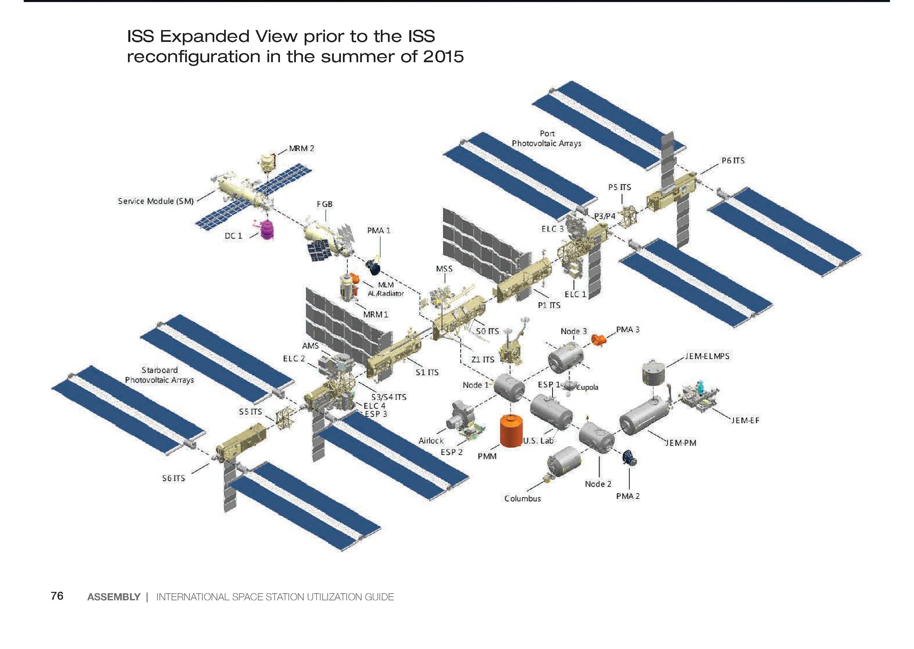

Jessica Watkins, Luke Delaney, Joshua Kutryk a Sergey Teteryatnikov.
posledních 24 hodinod otevřenídalší hodina
–km/h
–výška km
–souřadnice
–osvětlení
Natočení stanice
Odhad podle směru pohybu. ISS běžně letí v režimu, kdy je její spodní strana orientována k Zemi.
N
ISS➤
směr se počítáPosádka Expedice 75
Délka pobytu se dopočítává od příletu.
CZ
ČESKÁ MISE K ISS · PLÁN 2027
Aleš Svoboda: výcvik pro Vast PAM-1
Současná fáze: specifický výcvik pro konkrétní misi. Tříblokový základní program astronautské rezervy ESA dokončil na jaře 2026.
pilotování lodi Dragonstart na Falconu 9přiblížení a spojení s ISSnávrat na Zemi
Výcvik probíhá v blocích v Evropě a USA. Aleš má být pilotem mise vedené Thomasem Pesquetem; nominaci ještě musí schválit panel MCOP partnerů ISS.
Rychlost a výška
Průměrná minutová měření se uchovávají 30 dní.
DETAILNÍ 3D MODEL
Mezinárodní vesmírná stanice
Tažením model otočíte, kolečkem nebo gestem přiblížíte.
Aktuálně připojené loděDragon Crew-12 · horní port HarmonySojuz MS-29 · modul PričalCygnus XL · spodní port UnityProgress 95 · zadní port ZvezdyStav ověřen 14. 9. 2026
Model: International Space Station: ISS, Studio Lab, Sketchfab
Moduly a vnější části ISS
Technické schéma NASA ve vysokém rozlišení. Kliknutím otevřete plnou velikost.

Americká a mezinárodní část
- Unity (Node 1)
- první spojovací uzel
- Destiny
- americká laboratoř
- Quest
- přechodová komora pro výstupy
- Harmony (Node 2)
- uzel laboratoří a Dragonu
- Columbus
- evropská laboratoř ESA
- Kibó
- japonská laboratoř JAXA
- Tranquility (Node 3)
- životní podpora a cvičení
- Cupola
- pozorovací modul se sedmi okny
- Leonardo (PMM)
- skladovací modul
- BEAM
- experimentální nafukovací modul
Ruská část
- Zarja
- funkční a nákladový blok
- Zvezda
- servisní a obytný modul
- Poisk
- výzkumný a dokovací modul
- Rassvet
- výzkumný a skladovací modul
- Nauka
- víceúčelová laboratoř
- Pričal
- uzlový dokovací modul
Vnější konstrukce
Nosníky S0–S6 a P1–P6, fotovoltaické panely, radiátory, Canadarm2, Dextre, mobilní základna a venkovní experimentální plošiny.
Uvnitř ISS
Nejde o živou palubní telemetrii, ale o běžné provozní hodnoty.
18–27 °Cteplota kabiny
≈ 101 kPatlak podobný Zemi
≈ 21 %podíl kyslíku
7 osobsoučasná posádka
Připojené lodě
Crew-12 Dragon, Soyuz MS-29, Cygnus XL, Progress 95 a očekávaně Progress 96 po příletu 11. září.
Co přiletí dál
Náklad a nové sluneční panely iROSA.
Přibližně 5 tun zásob a experimentů.